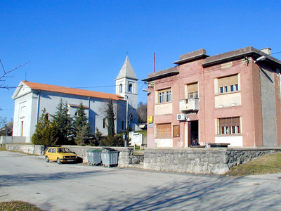

Gubi li jedinstveno mjesto pod učkom poštanski ured?
Danijel Ferić, izvršni direktor Središta pošta HP-a u Pazinu, kaže da se do daljnjega neće zatvoriti poštanski ured u Šušnjevici, već da će se samo učiniti promjene u dostavi pošiljaka, no traži da se Općina očituje je li zainteresirana za pokrivanje gubitaka
 Šušnjevica - I na prošlotjednoj sjednici Općinskog vijeća Kršana ponovljen je stav vijećnika s početka kolovoza da bi zatvaranje poštanskog ureda u Šušnjevici nanijelo veliku štetu tamošnjem gospodarstvu i stanovništvu te naporima Općine da se zaustavi daljnje opadanje broja stanovnika u tom kraju u podnožju Učke.
Josip Kontuš, predsjednik Kluba IDS-a i poduzetnik iz okolice Šušnjevice, podsjetio je da bi takav nepromišljen potez Hrvatske pošte zagorčao život tamošnjim ljudima, među kojima je najviše onih starije dobi, koji bi zbog jedne uplatnice morali putovati do 15-ak kilometara u Kršan. Pokazao je i peticiju upućenu Hrvatskoj pošti u Pazinu, koju je na poziv Mjesnog odbora Šušnjevice potpisalo 257 mještana tražeći da se preispita i izmijeni ta odluka. U peticiji navode da ne mogu shvatiti da bi tvrtka u državnom vlasništvu takvo što mogla učiniti svojim građanima, odnosno ogorčenim stanovnicima Šušnjevice, Letaja, Nove Vasi, Jesenovika, Kostrčana, Brda i Zankovci.
Potpisnici peticije svjesni su da njihova mala pošta ne može biti profitabilna kao one na istarskoj obali i u većim gradovima, ali takvim potezom poručilo bi se ljudima i poduzetnicima da nemaju ovdje iste uvjete življenja kao drugdje te da im je najbolje potražiti život na drugom mjestu. Suprotno je to politici države o ravnomjernom razvoju cijele zemlje, pa ne možemo prihvatiti takvu odluku, zbog čega vjerujemo da će njihova pošta, na čiju su dugu tradiciju vrlo ponosni, i dalje ostati otvorena u Šušnjevici. To je mjesto središte Istrorumunja, koji žive u spomenutim selima. Ono je poštu imalo ne samo u posljednjih šezdesetak godina, već i za Italije kada je, upravo zbog posebnosti ovdašnjeg stanovništva, Šušnjevica bila i općinsko središte.
Danijel Ferić, izvršni direktor Središta pošta HP-a u Pazinu, u odgovoru na pismo što mu ga je početkom kolovoza uputio predsjednik Općinskog vijeća Kršana Klaudijo Lazarić, napominje da se do daljnjega neće zatvoriti poštanski ured u Šušnjevici, već da će se samo obaviti promjene u dostavi pošiljaka. Međutim, pozivajući se na zakonsku regulativu, on od Općine traži da se očituje je li zainteresirana za pokrivanje gubitaka četiri poštanska ureda na području te općine koji godišnje iznose između 350 i 400 tisuća kuna. Po njemu, promet ureda u Šušnjevici stalno opada, pa je lanjski gubitak iznosio oko 60 tisuća kuna, što je i posljedica stalnog opadanja broja stanovnika.
O tom zahtjevu nije bilo riječi na prošlotjednoj sjednici Općinskog vijeća, ali je Kontuš izrazio spremnost da ih se oslobodi plaćanja najamnine u Šušnjevici te da se za poštu u Kršanu nađe prikladniji i jeftiniji poslovni prostor. Istodobno, on očekuje da i Hrvatske pošte povuku neke poteze da bi se pospješio rad poštanskog ureda Šušnjevice.
Nije teško zaključiti da obje strane imaju valjane argumente pa će se morati potražiti rješenje koje će zadovoljiti i Hrvatsku poštu i mještane. Ako zatvaranje nije rješenje za budućnost ovdašnjih ljudi i poduzetnika te za ravnomjeran razvoj države, a i gubici se ovako ili onako prelamaju preko nečijih leđa, ne bi li bilo razumno malo učiti od prošlosti. Naime, još za Austrije država je poštanske usluge u malim mjestima prepuštala gostionicama, u kojima se danas u Italiji prodaje i državna lutrija. Ovako bi oštarije kao jedino mjesto okupljanja u seoskim sredinama dobile dodatne životne impulse, ali i prihode, a troškovi Hrvatske pošte sveli bi se tek na naknadu za obavljene usluge. Dok se takvo što ne dogodi, i lokalna zajednica treba podmetnuti leđa za opstanak poštanskog ureda u nekadašnjem općinskom središtu.
September 28, 2005
© 2005 Glas Istre